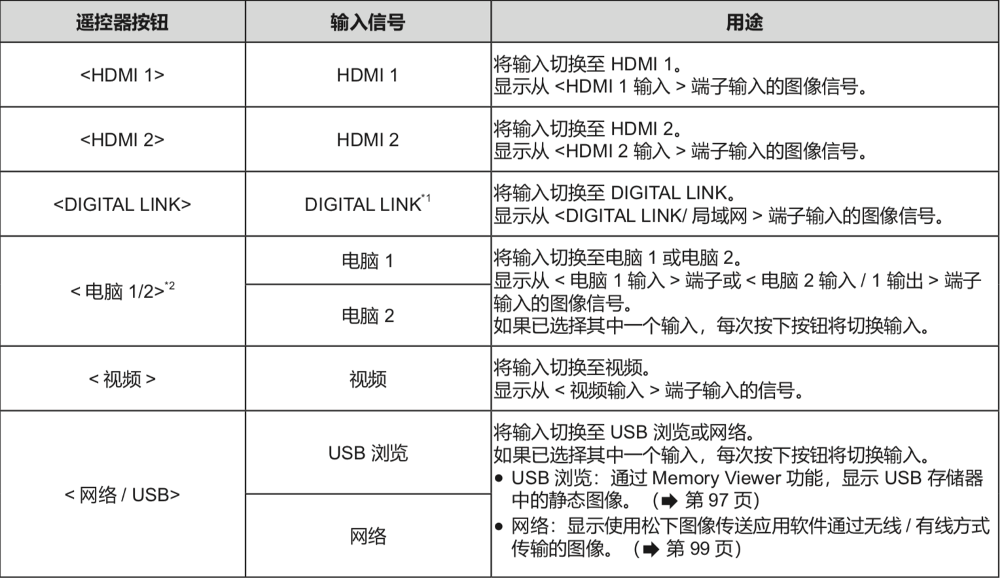

三、投影使用¶
I. 投影信号选择¶
1) 通过遥控器切换输入信号¶
可以通过按下遥控器上的输入信号选择按钮直接切换输入信号。
按下输入选择按钮(<HDMI 1>、<HDMI 2>、<DIGITAL LINK>、< 电脑 1/2>、< 视频 >、< 网络 / USB>)。
{kind=link}
不适用于PT-BMZ40C、PT-BMX50C。
如果[投影机设置]菜单→[COMPUTER2输入输出选择]设置为[电脑1输出]，则不能选择电脑2输入。
Note
图像可能无法正确投影，这取决于要播放的外部设备、蓝光光盘或 DVD 光盘。根据输入信号设置以下菜单选项。
确认投影屏幕和图像的宽高比，然后通过[位置]菜单→[宽高比]切换至最佳宽高比。
当选择网络输入时，可以使用松下图像传送应用软件通过无线 / 有线方式投影计算机(包括 iPad / iPhone / iPod touch 设备 ) 上的图像。
2) 通过控制面板切换输入信号¶
可以通过控制面板上的< 输入信号选择 > 按钮来切换输入。
按下 < 输入信号选择 > 按钮后，将显示具体或简单输入向导。
按下控制面板上的 < 输入信号选择 > 按钮
显示输入向导。
再次按下 < 输入信号选择 > 按钮。
每次按 < 输入信号选择 > 按钮，都会切换输入。
显示 [ 具体 ] 输入向导时，可以使用遥控器或控制面板上的上下左右按钮选择输入。
II. 遥控器使用¶
{kind=link}
{kind=link}
{kind=link}
4) 动态对比度功能¶
根据图像自动执行光源调整和信号补偿以产生最佳对比度的图像。
[动态对比度]仅可在有信号输入时才能设置。
按遥控器上下键选择[动态对比度]。
按遥控器左右键或 <执行> 按钮。
随即显示［动态对比度］个别调整画面。
按遥控器左右键切换项目
[关]：禁用动态对比度功能。
[1]： 以较小程度调整光源并补偿信号。
[2]： 以较大程度调整光源并补偿信号。
[用户]：当输入视频信号的亮度低于特定值时，光源可设为关闭。
5)强光感应¶
即使在较亮的光线下投影图像，用户也可以将图像调节为最佳亮度。
按上下键选择［强光感应］
按左右键或 <执行> 按钮。
显示［强光感应］个别调整画面。
按左右键切换项目。
每次按按钮都会切换项目。
{kind=link}
Note
当［投影机设置］菜单→［投影方法］设置为［背投/地装］或［背投/吊装］时，［强光感应］不能设置为［自动］ 。
当有物品放在投影机上面挡住亮度传感器时，可能无法正确检测亮度，此时，即使设置为［自动］，此功能也可能无法正常运作。
{kind=link}
{kind=link}
{kind=link}
{kind=link}
{kind=link}
{kind=link}
{kind=link}